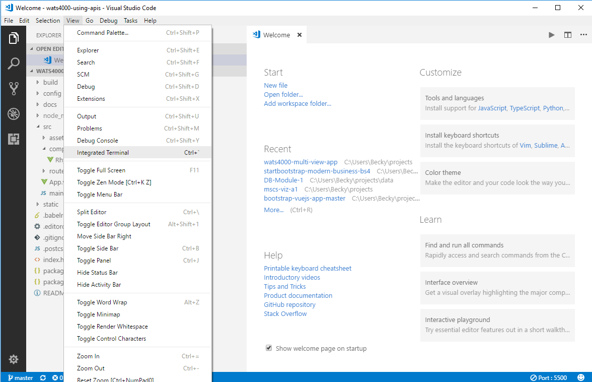
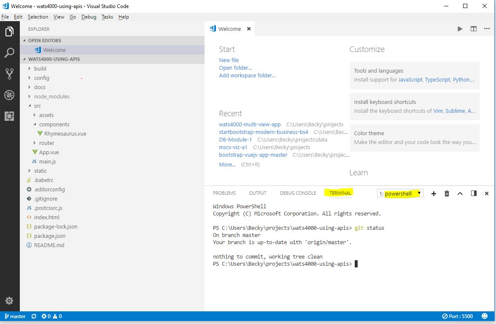
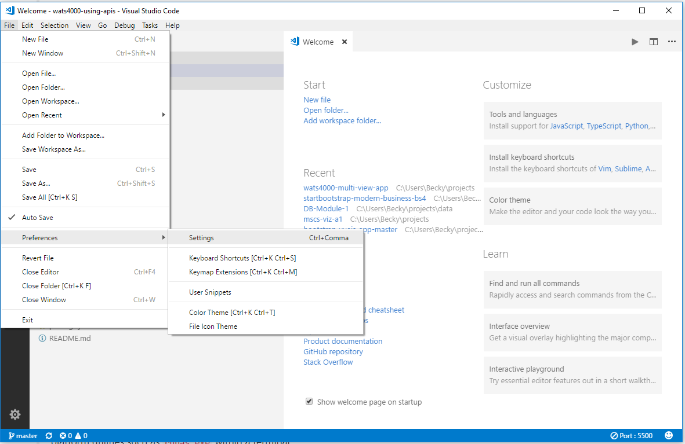
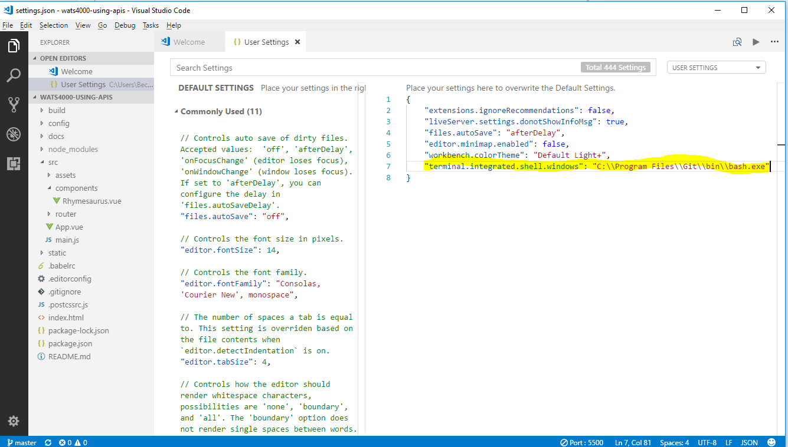
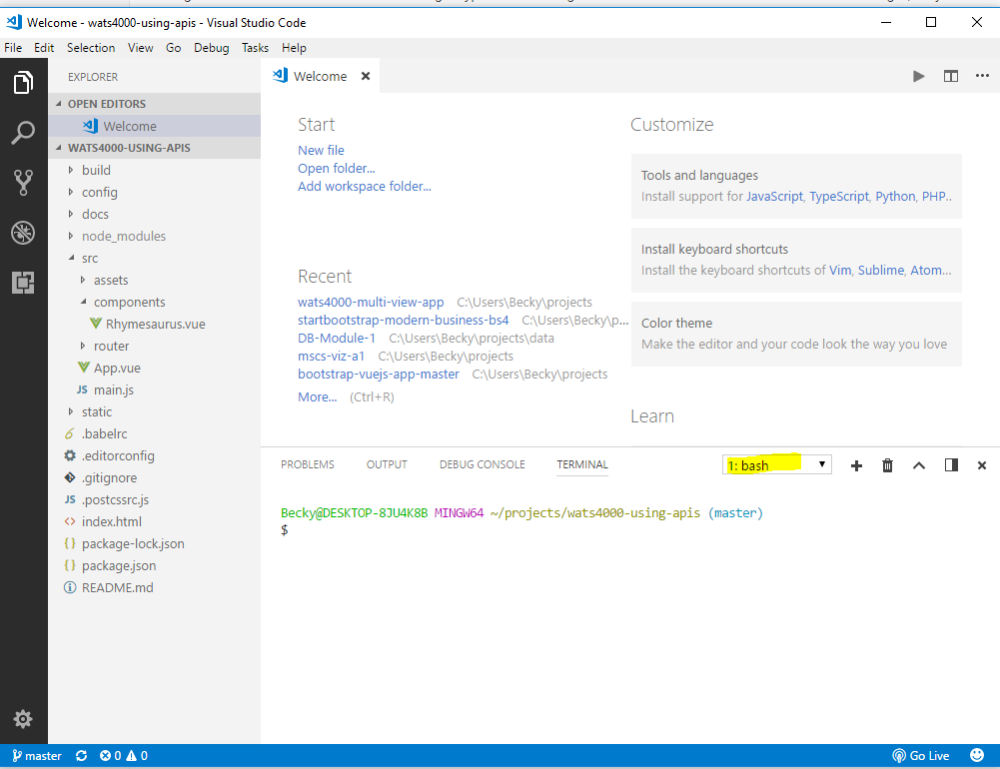

This is the answer to "How to use the Visual Studio Code Terminal?"
Visual Studio Code allow you to access a terminal from within the application. You also have the ability to set up different terminal interfaces. As developers, we use the terminal to communicate with Github and issue commands to maintain the repo were working on.
To open the integrated terminal from the menu click on View Integrated Terminal from the menu. You can also use the shortcut Ctrl-Tick. The Tick is located on top left of the keyboard below the Escape key.

The picture below shows the terminal opened at the bottom and a command for git status has been issued. This terminal was opened on a Windows 10 workstation where Powershell it the default terminal. On a Mac the default terminal is bash.

The default interface for Mac is the OS X bash, which is works well when communicating with Github. For Windows users, it is useful to configure your dev environment to use Git Bash as the default integrate terminal in VS Code.
You will first access User Settings on Windows from the File Preferences Setttings menu.

This will open up two documents side by side. On the left are the default settings and on the right are the User override settings. To configure Windows to use Git Bash, you must first have installed Git. Git installation will have placed the Git Bash executable in this location: C:\Program Files\Git\bin\bash.exe. You will create an entry in your User settings override to use this for the integrated terminal. In the screen on the right type the following. If there are other entries in the screen on the right, they must be comma separated. The extra back slashes (\) you see are escape characters. After making the entry you should save and close the file. To make the configuration complete close and reopen VS Code.
"terminal.integrated.shell.windows": "C:\\Program Files\\Git\\bin\\bash.exe"

After your new configuration is in your terminal should look like the picture below with bash as the terminal interface.
